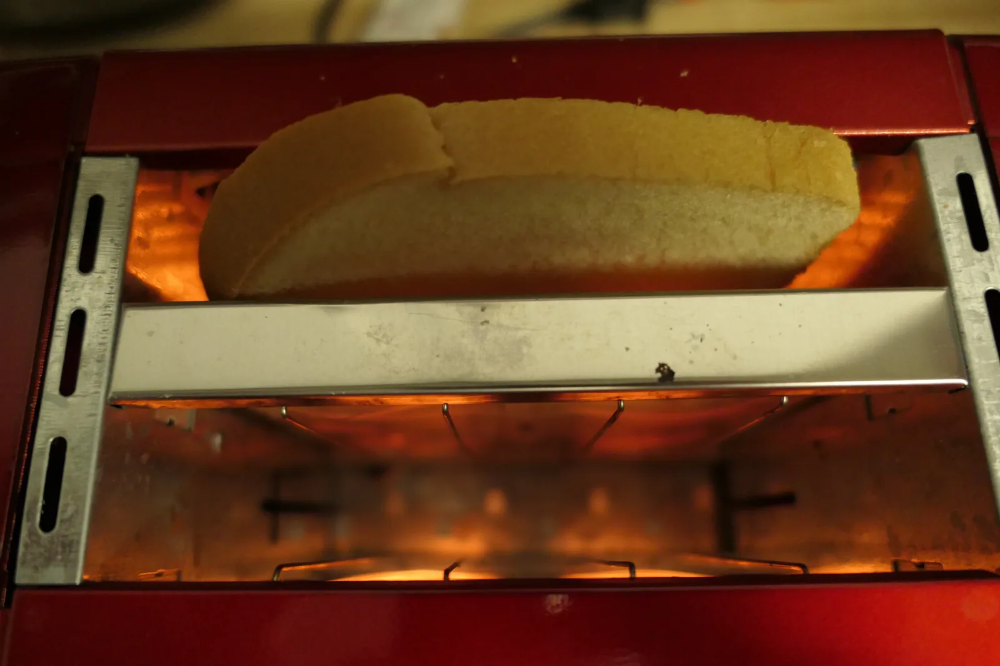

Electric power and the heating of a resistor
Why do the resistance wires of a toaster glow red while the toaster's cord stays cool, even though the same current flows through both?
Prior knowledge
- Power tells how much energy is transformed from one form to another per secondchapter Power
- Voltage tells how many joules of energy one coulomb of charge gives up in a componentchapter Circuit, electric current and voltage
- The voltage of a resistor is $U = RI$chapter Resistance and Ohm's law
- The same current flows through resistors in series, and resistors in parallel have the same voltagechapter Resistors in series and in parallel
Core path: follow the steps in order. Besides calculations, the core path includes investigations, explanations and graphs. Tasks marked Optional give extra practice. Optional tasks: 3.
Think about it
In the morning you push the lever of the toaster down. After a moment the wires inside the slots glow red, and the air above them shimmers with heat. The toaster's cord runs across the worktop to the wall socket, and when you touch it, it feels like room temperature. The same electric current flows through the cord to the glowing wires and back.
What decides how much a part of a circuit heats up when a current flows through it?
Optional Recap: Ohm's law
Predict
Make your predictions before investigating 2 questions
Prediction 1: resistors in series
Prediction 2: resistors in parallel
Investigate
Choose the connection, adjust the voltage and the resistors, and start the clock. Follow the powers of the resistors and the temperature of the water in both glasses.
Simulation
How to use
The sliders set the voltage $U$ of the source and the resistors $R_1$ and $R_2$, and Connection chooses whether the resistors are in series or in parallel. Start starts the clock and Stop stops it; Reset returns the time to zero and the temperature of the water to $20.0\,{}^\circ\text{C}$. Speed changes only how fast the simulated time passes. The purple arrows show the current in the agreed direction from the positive terminal to the negative terminal. The coil glows the brighter, the larger its power, and the orange bar under the glass is on the power scale: a full bar is $72\,\text{W}$. The red column of the thermometer and the tint of the water show the temperature. The run stops when the water in either glass reaches $80\,{}^\circ\text{C}$.
Assumptions of the model
The voltage source is ideal, so the voltage between its terminals is always $U$, and the wires have no resistance. The resistances of the resistors stay constant even when they warm up. Each glass holds $0.10\,\text{kg}$ of water, and all the electrical energy of the resistor heats the water: heat losses to the surroundings and the warming of the glass and the coil are ignored. That is why the temperature rises steadily. In a real glass the rise would slow down as the water warms and gives off more heat to the surroundings. The numbers are values calculated by the model, not measurements.
How the calculation works
In a series connection the current is $I = U : (R_1 + R_2)$, and the voltages of the resistors are $U_1 = R_1 I$ and $U_2 = R_2 I$. In a parallel connection the voltage across each resistor is $U$, the currents are $I_1 = U : R_1$ and $I_2 = U : R_2$, and the current of the source is $I = I_1 + I_2$. The power of each resistor is its voltage times its current, $P_1 = U_1 I_1$, and the power of the source is $P = UI$. When the clock runs for a time $\Delta t$, the temperature of the water in the glass rises by
$$\Delta T = \frac{P_1 \Delta t}{c m}$$
where $c = 4190\,\tfrac{\text{J}}{\text{kg} \cdot \text{K}}$ and $m = 0.10\,\text{kg}$. The energy is $E_1 = P_1 t$.
Experiment 1: powers in a series connection
Test prediction 1. The resistors are in series, the voltage of the source is $12\,\text{V}$ and $R_1 = 4\,\Omega$; change only the resistor $R_2$. Record the values for at least two resistances, for example $4\,\Omega$, $8\,\Omega$ and $16\,\Omega$, and start the clock to see which glass warms up faster. Which resistor gets the larger power?
Initial state: source voltage $U$ = $12\,\text{V}$, resistor $R_1$ = $4\,\Omega$, resistor $R_2$ = $8\,\Omega$, connection: in series. Kept constant: source voltage $U$, resistor $R_1$, connection. Varied: resistor $R_2$.
| resistor $R_2$ | $I$ $(\text{A})$ | $U_1$ $(\text{V})$ | $U_2$ $(\text{V})$ | $P_1$ $(\text{W})$ | $P_2$ $(\text{W})$ |
|---|
Experiment 2: powers in a parallel connection
Test prediction 2. The resistors are in parallel, the voltage of the source is $12\,\text{V}$ and $R_1 = 4\,\Omega$; change only the resistor $R_2$. Record the values for at least two resistances, for example $4\,\Omega$, $8\,\Omega$ and $16\,\Omega$. On every row calculate $P_1 + P_2$ and compare it with the power $P$ of the source. Which resistor gets the larger power now?
Initial state: source voltage $U$ = $12\,\text{V}$, resistor $R_1$ = $4\,\Omega$, resistor $R_2$ = $8\,\Omega$, connection: in parallel. Kept constant: source voltage $U$, resistor $R_1$, connection. Varied: resistor $R_2$.
| resistor $R_2$ | $I_1$ $(\text{A})$ | $I_2$ $(\text{A})$ | $P_1$ $(\text{W})$ | $P_2$ $(\text{W})$ | $P$ $(\text{W})$ |
|---|
Conclusion: which resistor gets the larger power?
Write, on the basis of your tables: which resistor got the larger power in the series connection and which in the parallel connection? Which quantity was the same for the resistors in each connection, and how does it explain the result? How are the powers of the resistors related to the power of the source?
Model answer
In the series connection the larger resistance got the larger power: when $R_2 = 8\,\Omega$, the current was $1.0\,\text{A}$ in both and the powers were $P_1 = 4.0\,\text{W}$ and $P_2 = 8.0\,\text{W}$. The common quantity was the current, so with the same current the resistor with the larger resistance got the larger power $P = RI^2$ ($P_2 > P_1$ on every row where $R_2 > R_1$), and the voltage across it was larger. When $R_2$ grew, the resistance of the whole circuit grew and the common current decreased, so $P_2$ did not keep growing. In the parallel connection the smaller resistance got the larger power: when $R_2 = 8\,\Omega$, the powers were $P_1 = 36\,\text{W}$ and $P_2 = 18\,\text{W}$. The common quantity was the voltage $12\,\text{V}$, so the smaller resistance got the larger current, and the power $P = U^2 : R$ decreased as the resistance grew. In both connections the powers of the resistors added up to the power of the source, for example $36\,\text{W} + 18\,\text{W} = 54\,\text{W}$. The values are calculated by the model: in the model the source and the wires have no resistance.
Assess your own answer
Tick the points your own answer already contains.
Theory
Key idea
Power: how fast electrical energy is transformed
Power tells how much energy is transformed from one form to another per second (chapter Power: $P = \Delta E/\Delta t$). In a circuit it can be found from the voltage and the current. Voltage tells how much energy one coulomb of charge gives up as it passes through a component: $12\,\text{V}$ means $12\,\text{J}$ per coulomb (chapter Circuit, electric current and voltage). Current tells how many coulombs pass through the component per second. Multiplying the two gives the electrical energy transformed in the component per second, the electric power $P = UI$.
In the resistor in the figure, $0.50\,\text{C}$ passes through every second, and each coulomb gives up $12\,\text{J}$ in it. So $6.0\,\text{J}$ of electrical energy is transformed per second, and the power of the resistor is $6.0\,\text{W}$. The unit of power is the watt: $1\,\text{W} = 1\,\text{J/s} = 1\,\text{V} \cdot 1\,\text{A}$.
Joule's law: why a resistor heats up
In a resistor the electric field accelerates free electrons, but they keep colliding with the ions of the metal (chapter Resistance and Ohm's law). In the collisions the energy the electrons have gained is passed on to the vibrations of the ions: electrical energy is transformed into internal energy of the resistor, and the resistor warms up. From a warm resistor, energy is transferred as heat to the surroundings.
When Ohm's law $U = RI$ is substituted into the formula for power, the power of the resistor becomes $P = RI \cdot I = RI^2$. This is Joule's law: the power transformed into internal energy in a resistor is proportional to the resistance and to the square of the current. When the current through the same resistor doubles and its resistance stays the same, the heating power becomes four times larger.
How power is shared in a circuit
The same current flows through resistors in series (chapter Resistors in series and in parallel), so by Joule's law $P = RI^2$ a larger resistance gets a larger power. Resistors in parallel have the same voltage. Then it is best to calculate the power from the voltage: when $I = U : R$, the power is $P = U^2 : R$, and a smaller resistance gets a larger power.
In the figure, the same $4\,\Omega$ and $8\,\Omega$ resistors are connected to a $12\,\text{V}$ source, first in series and then in parallel. In both connections the powers of the resistors add up to the power $UI$ given by the source, because energy is conserved. In the series connection $4.0\,\text{W} + 8.0\,\text{W} = 12\,\text{W}$, and the power of the source is $12\,\text{V} \cdot 1.0\,\text{A} = 12\,\text{W}$.

The toaster and its cord
The resistance wire of the toaster and the cord are in series, so the same current flows through them. The resistance of the wire is tens of ohms, that of the copper conductors of the cord only hundredths of an ohm. In a toaster with a power of $900\,\text{W}$, the resistance of the wire is about $59\,\Omega$ and the current about $3.9\,\text{A}$. If the resistance of the cord is $0.050\,\Omega$, the cord gets a power of $0.050\,\Omega \cdot (3.9\,\text{A})^2 \approx 0.8\,\text{W}$, which is spread over the whole length of the cord. By Joule's law the power in the cord is therefore more than a thousand times smaller than in the wire: the ratio of the resistances is $59\,\Omega : 0.050\,\Omega \approx 1200$. The resistance wire, on the other hand, glows.
The heating of a resistor levels off
When the current is switched on, the resistor first warms up quickly, because almost all the electric power increases its internal energy. The warmer the resistor is compared with its surroundings, the more heat is transferred from it to the surroundings per second, so the heating slows down. The temperature levels off when heat is transferred from the resistor to the surroundings as fast as electrical energy arrives. That is why a resistor has a maximum permitted power, for example $0.25\,\text{W}$: at a larger power the final temperature would rise so high that the resistor would be damaged.
Electric power and Joule's law
The electric power is
$$P = UI$$
where $P$ is the power (W), $U$ the voltage of the component (V) and $I$ the current through the component (A). The formula holds for any component: a resistor, a lamp, a motor or a battery being charged.
For a resistor with resistance $R$, Ohm's law $U = RI$ gives the two forms of Joule's law:
$$P = RI^2 = \frac{U^2}{R}$$
where $R$ is the resistance of the resistor ($\Omega$). The form $RI^2$ is handy when the current is known, as in a series connection, and the form $U^2 : R$ when the voltage is known, as in a parallel connection.
The electrical energy transformed in a component in a time $t$ is
$$E = Pt$$
where $E$ is the energy (J) and $t$ the time (s). In a resistor this energy is transformed into internal energy and transferred as heat to the surroundings.
The power marked on a device, for example $230\,\text{V}$ and $900\,\text{W}$, is its power at the rated voltage. At a lower voltage the power of a resistive device is smaller, because $P = U^2 : R$ when the resistance stays approximately the same. In the graph the power of a resistor grows as the square of the current: when the current of a $4\,\Omega$ resistor grows from $1.0\,\text{A}$ to $2.0\,\text{A}$, the power grows from $4.0\,\text{W}$ to $16\,\text{W}$.
Common misconception
Many people think that a resistor with a larger resistance always heats up more, or, the other way round, that a smaller resistance always heats up more because a larger current flows through it. Neither is always true: it depends on the connection. In a series connection the current is the same, and a larger resistance gets a larger power $RI^2$. In a parallel connection the voltage is the same, and a smaller resistance gets a larger power $U^2 : R$.
Another common mistake is to calculate the power of a resistor in series with the voltage of the source. If a $4\,\Omega$ and an $8\,\Omega$ resistor are connected in series to a $12\,\text{V}$ source, the power of the $8\,\Omega$ resistor is not $(12\,\text{V})^2 : 8\,\Omega = 18\,\text{W}$, because across the resistor there is only a part of the source voltage, $8.0\,\text{V}$. In the formula $U^2 : R$ you always substitute the voltage of the very component whose power you are calculating.
Summary
- The electric power $P = UI$ tells how many joules of electrical energy are transformed in a component per second. The unit is $1\,\text{W} = 1\,\text{V} \cdot 1\,\text{A}$.
- Joule's law: the power transformed into internal energy in a resistor is $P = RI^2 = U^2 : R$. When the current through the same resistor doubles and its resistance stays the same, the power becomes four times larger.
- In a series connection a larger resistance gets a larger power, in a parallel connection a smaller one. The powers of the components add up to the power of the source.
- The energy is $E = Pt$. A resistor warms up until heat is transferred from it to the surroundings as fast as electrical energy arrives.
Optional Return to your predictions
Compare your predictions with the values of the model in the experiments and with Joule's law. Then return to the opening question: why do the resistance wires of the toaster glow while the cord stays cool, even though the same current flows through them?
Would you change your prediction?
Examples
Once you have studied the chapter's theory, move on to the guided examples. In the first you follow a worked solution step by step; in the next ones you make the choices yourself, and the hints help if you get stuck.
Example 1: A car's auxiliary heater
A car's auxiliary heater has two heating resistors, $R_1 = 15\,\Omega$ and $R_2 = 30\,\Omega$, connected in parallel to a $12\,\text{V}$ battery. How large is the power of each resistor, and how much electrical energy is transformed into internal energy of the resistors in total in $5.0\,\text{min}$? The resistances of the battery and the wires are ignored.
Step 1/7
Given and find. $U = 12\,\text{V}$, $R_1 = 15\,\Omega$, $R_2 = 30\,\Omega$ and $t = 5.0\,\text{min}$. We are asked for the powers $P_1$ and $P_2$ and the energy $E$.
Step 2/7
Principle. Across each of the resistors in parallel is the full battery voltage $U$. When the voltage is known, the power is calculated from the form of Joule's law $P = U^2 : R$. The energy is the total power times the time, and the total power is the sum of the powers of the resistors.
Step 3/7
Formula solved.
$$\begin{aligned} P_1 &= \frac{U^2}{R_1} \\ P_2 &= \frac{U^2}{R_2} \\ E &= (P_1 + P_2)\,t \end{aligned}$$
Step 4/7
Unit conversions.
In addition
$\text{W} \cdot \text{s} = \text{J}$.
Step 5/7
Substitution. $$\begin{aligned} P_1 &= \frac{U^2}{R_1} \\ \phantom{P_1} &= \frac{(12\,\text{V})^2}{15\,\Omega} = 9.6\,\text{W} \\ P_2 &= \frac{(12\,\text{V})^2}{30\,\Omega} = 4.8\,\text{W} \\ E &= 14.4\,\text{W} \cdot 300\,\text{s} \\ \phantom{E} &= 4320\,\text{J} \end{aligned}$$
Step 6/7
Result. The power of the resistor $R_1$ is $9.6\,\text{W}$ and that of the resistor $R_2$ is $4.8\,\text{W}$. In five minutes about $4.3\,\text{kJ}$ is transformed into internal energy. The results are given to two significant figures like the initial data.
Step 7/7
Reasonableness. The current from the battery is
so the power of the battery is $12\,\text{V} \cdot 1.2\,\text{A} = 14.4\,\text{W}$, the same as the powers of the resistors together. In a parallel connection the resistor with half the resistance gets twice the power, as it should.
Example 2: Find the error
Example 3: Apply to a new situation
A travel kettle meant for a car has a heating resistor with a resistance of $2.4\,\Omega$, and it is connected to the car's $12\,\text{V}$ battery. The kettle holds $0.40\,\text{kg}$ of water at a temperature of $20\,{}^\circ\text{C}$.
How long does it take to heat the water to the boiling point $100\,{}^\circ\text{C}$? Assume that all the electrical energy heats the water, that no water evaporates before the boiling point and that the resistance of the resistor stays constant. The specific heat capacity of water is $4190\,\tfrac{\text{J}}{\text{kg} \cdot \text{K}}$. Give the answer in minutes.
Hint 1: a guiding question
How much energy does heating the water require? And how large is the power of the kettle when the battery voltage is across the resistor?
Hint 2: what is the connection
The energy is $Q = cm\Delta T$ (chapter Heating and cooling of matter), and the power of the resistor is $P = U^2 : R$.
Hint 3: an intermediate step
The time is $t = Q : P$; finally convert the seconds to minutes.
Show the solution
Given
voltage of the battery $U = 12\,\text{V}$, resistance $R = 2.4\,\Omega$, mass of the water $m = 0.40\,\text{kg}$, temperatures $20\,{}^\circ\text{C}$ and $100\,{}^\circ\text{C}$, specific heat capacity of water $c = 4190\,\tfrac{\text{J}}{\text{kg} \cdot \text{K}}$
Find
the heating time $t$ in minutes
Principle
The full battery voltage is across the resistor, so by Joule's law its power is $P = U^2 : R$. Since all the electrical energy heats the water and the state of matter does not change before the boiling point, the energy $Pt$ transformed in the resistor equals the energy $cm\Delta T$ needed to warm the water.
Formula
$Pt = cm\Delta T$ and $P = \dfrac{U^2}{R}$, so $t = \dfrac{cm\Delta T}{P}$
Conversions
The change in temperature is
because the change is the same in degrees Celsius and in kelvins. Finally $1\,\text{min} = 60\,\text{s}$.
Substitution
so
Answer
about $37\,\text{min}$, two significant figures like the resistance $2.4\,\Omega$ and the mass $0.40\,\text{kg}$.
Reasonableness
The power of the kettle, $60\,\text{W}$, is only about one thirtieth of the power of a $2000\,\text{W}$ household kettle, which would boil the same water in about a minute. A time of the order of half an hour is therefore expected. In reality some of the energy goes to the surroundings, so the time would be even longer.
Self-check
Finally, assess whether you have reached the chapter's goals. If an answer is wrong, you get a suggestion of what to review.
1. Reflection task
Answer on your own first and only then open the answer.
- The rating plate of a device says $230\,\text{V}$, $1150\,\text{W}$. How large a current flows through the device when it is connected to the mains and works at its rated power?
Answer
The power is $P = UI$, so the current is
$I$$= P : U$$= 1150\,\text{W} : 230\,\text{V}$$= 5.0\,\text{A}$ - The current through a resistor becomes twice as large, and the resistance of the resistor stays the same. How many times larger does the power of the resistor become?
Answer
By Joule's law $P = RI^2$. When the current doubles, the power becomes $2^2 = 4$ times larger.
2. Concept task
3. Calculation task: Heating of an extension cord
The two conductors of an extension cord have a combined resistance of $0.20\,\Omega$. A current of $8.0\,\text{A}$ flows through the cord to a fan heater.
How large a power is transformed into internal energy in the cord? Give the answer in watts.
Hint 1: a guiding question
The cord is in series with the heater, and you know the current through it. Which form of Joule's law fits?
Hint 2: what is the connection
When the current is known, $P = RI^2$.
Hint 3: an intermediate step
$P = 0.20\,\Omega \cdot (8.0\,\text{A})^2$
Show the solution
Given
resistance of the cord $R = 0.20\,\Omega$, current $I = 8.0\,\text{A}$
Find
the power $P$ transformed into internal energy in the cord, in watts
Principle
The cord has resistance, so by Joule's law electrical energy is transformed into internal energy in it. The current through the cord is known, so the power is calculated from the form $P = RI^2$.
Formula
$P = RI^2$
Conversions
Not needed:
Substitution
Answer
about $13\,\text{W}$, two significant figures like the resistance and the current.
Reasonableness
The power of the heater is about $230\,\text{V} \cdot 8.0\,\text{A} \approx 1800\,\text{W}$, so less than one percent goes to the cord. The power is spread over meters of cord, so the cord warms up only a little. If the cord is on a reel, little energy is transferred from it as heat to the surroundings, and the cord can become dangerously hot.
Suggestion: one answer does not show everything you can do, but review the theory and do the core exercises.
Optional 4. Explanation task: Explain the toaster phenomenon
Use Joule's law to explain the opening question: why do the resistance wires of a toaster glow while the toaster's cord stays cool, even though the same current flows through both?
Model answer
The resistance wires and the cord are in series, so the same current flows through them. By Joule's law $P = RI^2$ the power transformed into internal energy is then proportional to the resistance. The resistance of the resistance wire is tens of ohms, that of the copper conductors of the cord only hundredths of an ohm, so the cord gets a much smaller power than the wire: for example a resistance ratio of $59\,\Omega : 0.050\,\Omega \approx 1200$ means a power more than a thousand times smaller. In addition, the small power of the cord is spread over meters of cord, and energy is transferred from the cord as heat to the surroundings once it has warmed only a little. The resistance wire, on the other hand, warms up until it gives off heat as fast as electrical energy arrives, and that happens only at a glowing temperature.
Assess your own answer
Tick the points your own answer already contains.
Exercises
Level 1 · basic practice 8 exercises
One formula or one step of reasoning. Core exercises first, the rest is extra practice.
- Exercise 6-1
A USB charger gives a phone a voltage of $5.0\,\text{V}$ and a current of $2.4\,\text{A}$. How large is the charging power?
Answer
$12\,\text{W}$
Show the solution
Given
voltage $U = 5.0\,\text{V}$, current $I = 2.4\,\text{A}$
Find
the charging power $P$ in watts
Principle
Electric power is the product of voltage and current: the voltage tells how many joules one coulomb gives up, and the current how many coulombs pass per second. The formula holds for any device, including a charger.
Formula
$P = UI$
Conversions
Not needed: $1\,\text{V} \cdot 1\,\text{A} = 1\,\text{W}$.
Substitution
$P$$= 5.0\,\text{V} \cdot 2.4\,\text{A}$$= 12\,\text{W}$Answer
$12\,\text{W}$
Two significant figures like the voltage and the current.
Reasonableness
The estimate $5\,\text{V} \cdot 2\,\text{A} = 10\,\text{W}$ is close to the result. The powers of fast phone chargers are typically between $10\,\text{W}$ and a few tens of watts, so the result is plausible.
- Exercise 6-2Core
The resistance of a resistor is $47\,\Omega$, and a current of $0.20\,\text{A}$ flows through it. How large a power is transformed into internal energy in the resistor?
Answer
$1.9\,\text{W}$
Show the solution
Given
resistance $R = 47\,\Omega$, current $I = 0.20\,\text{A}$
Find
the power $P$ transformed into internal energy in the resistor, in watts
Principle
Joule's law: the power transformed into internal energy in a resistor is the resistance times the square of the current. The current is known, so this form fits directly.
Formula
$P = RI^2$
Conversions
Not needed:
$\Omega \cdot \text{A}^2$$= \text{V} \cdot \text{A}$$= \text{W}$Substitution
$P$$= 47\,\Omega \cdot (0.20\,\text{A})^2$$= 47\,\Omega \cdot 0.040\,\text{A}^2$$= 1.88\,\text{W}$Answer
$1.9\,\text{W}$
Two significant figures like the resistance and the current.
Reasonableness
The voltage of the resistor is $47\,\Omega \cdot 0.20\,\text{A} = 9.4\,\text{V}$, and $9.4\,\text{V} \cdot 0.20\,\text{A} = 1.88\,\text{W}$ gives the same power. An ordinary small resistor withstands only $0.25\,\text{W}$, so a power resistor is needed here.
- Exercise 6-3
The heating resistor of an electric kettle has a resistance of $26.5\,\Omega$, and the kettle is connected to the $230\,\text{V}$ mains voltage.
How large is the power of the kettle? Give the answer in kilowatts.
Answer
$2.00\,\text{kW}$
Show the solution
Given
resistance $R = 26.5\,\Omega$, voltage $U = 230\,\text{V}$
Find
the power $P$ of the kettle in kilowatts
Principle
The full mains voltage is across the heating resistor, so it is best to use Joule's law in the form written with the voltage, $P = U^2 : R$.
Formula
$P = \dfrac{U^2}{R}$
Conversions
The result in watts is converted: $1\,\text{kW} = 1000\,\text{W}$.
Substitution
$P$$= \dfrac{(230\,\text{V})^2}{26.5\,\Omega}$$= \dfrac{52\,900\,\text{V}^2}{26.5\,\Omega}$$= 1996\,\text{W}$$= 1.996\,\text{kW}$Answer
$2.00\,\text{kW}$
Three significant figures like the resistance and the mains voltage $230\,\text{V}$ (which is assumed to be given to three figures).
Reasonableness
The power of a household kettle is typically of the order of $2\,\text{kW}$. The current is $230\,\text{V} : 26.5\,\Omega \approx 8.7\,\text{A}$, which is within the current limit of an ordinary socket.
- Exercise 6-4
An LED lamp with a power of $9.0\,\text{W}$ stays lit for $2.0\,\text{h}$.
How much electrical energy is transformed into other forms of energy in the lamp during this time? Give the answer in kilojoules.
Answer
$65\,\text{kJ}$
Show the solution
Given
power $P = 9.0\,\text{W}$, time $t = 2.0\,\text{h}$
Find
the electrical energy $E$ transformed in the lamp, in kilojoules
Principle
Power tells how many joules of energy are transformed per second. When the power is constant, the energy is the power times the time.
Formula
$E = Pt$
Conversions
$t$$= 2.0\,\text{h}$$= 2.0 \cdot 3600\,\text{s}$$= 7200\,\text{s}$and finally $1\,\text{kJ} = 1000\,\text{J}$.
Substitution
$E$$= 9.0\,\text{W} \cdot 7200\,\text{s}$$= 64\,800\,\text{J}$$= 64.8\,\text{kJ}$Answer
$65\,\text{kJ}$
Two significant figures like the power and the time.
Reasonableness
In one hour the lamp uses $9\,\text{W} \cdot 3600\,\text{s} \approx 32\,\text{kJ}$, so in two hours about twice that. The unit $\text{W} \cdot \text{s} = \text{J}$ is correct.
- Exercise 6-5
The graph shows the power of a resistor as a function of the current.
How large is the resistance of the resistor? Read the values you need from the graph.
Answer
$5.0\,\Omega$
Show the solution
Given
points of the graph: power $P$ as a function of current $I$
Find
the resistance $R$ of the resistor in ohms
Principle
By Joule's law the power of a resistor is $P = RI^2$. When the current and power of one point are known, the resistance can be solved.
Reading the graph
We read the point where the current is largest and easiest to read: when $I = 2.0\,\text{A}$, the point is on the grid line $P = 20\,\text{W}$. The point $(1.0\,\text{A}$; $5.0\,\text{W})$ is also on a grid line and gives the same result.
Formula
$P = RI^2$, so $R = \dfrac{P}{I^2}$
Conversions
Not needed:
$\text{W} : \text{A}^2$$= \text{V} : \text{A}$$= \Omega$Substitution
$R$$= \dfrac{20\,\text{W}}{(2.0\,\text{A})^2}$$= \dfrac{20\,\text{W}}{4.0\,\text{A}^2}$$= 5.0\,\Omega$Answer
$5.0\,\Omega$
Two significant figures, because the values are read from the graph to two figures.
Reasonableness
From the point $(1.0\,\text{A}$; $5.0\,\text{W})$ we get $5.0\,\text{W} : (1.0\,\text{A})^2 = 5.0\,\Omega$, the same result. When the current doubles, the power becomes four times larger, from $5\,\text{W}$ to $20\,\text{W}$, as Joule's law requires.
- Exercise 6-6Core
Two resistors with different resistances are connected in series to a voltage source. In which resistor is more electrical energy transformed into internal energy?
Answer
In the resistor with the larger resistance, because the current is the same and the power grows with the resistance.
Show the solution
Find
in which of the resistors connected in series more electrical energy is transformed into internal energy.
Principle
In a series connection the same current flows through all the components. When the current is the same, the form of Joule's law $P = RI^2$ gives a larger power for the resistor with the larger resistance. The same result is reached through the voltage: the voltage across the larger resistance is larger, $U = RI$, so $P = UI$ is also larger.
Model answer
More energy is transformed in the resistor with the larger resistance, because the current is the same and the power grows with the resistance ($P = RI^2$). The option in which the resistor with the smaller resistance has the larger current belongs to a parallel connection. The option in which the voltage is the same also belongs to a parallel connection: in a series connection the voltage of the source is divided among the resistors. Nor is the power equal, because the voltages across the resistors are different.
- Exercise 6-7
An LED strip is connected to a voltage of $12\,\text{V}$, and a current of $350\,\text{mA}$ flows through it.
How large is the power of the strip? Give the answer in watts.
Answer
$4.2\,\text{W}$
Show the solution
Given
voltage $U = 12\,\text{V}$, current $I = 350\,\text{mA}$
Find
the power $P$ of the strip in watts
Principle
Electric power is the product of voltage and current. The current is given in milliamperes, so it is first converted to amperes.
Formula
$P = UI$
Conversions
$1\,\text{mA} = 0.001\,\text{A}$, so $I = 350\,\text{mA} = 0.350\,\text{A}$
Substitution
$P$$= 12\,\text{V} \cdot 0.350\,\text{A}$$= 4.2\,\text{W}$Answer
$4.2\,\text{W}$
Two significant figures like the voltage.
Reasonableness
The estimate
$12\,\text{V} \cdot 0.35\,\text{A}$$\approx 12 \cdot \tfrac{1}{3}\,\text{W}$$= 4\,\text{W}$is close to the result. Without converting the milliamperes the result would be $4200\,\text{W}$, which is far too large for a small LED strip.
- Exercise 6-8
The voltage across a resistor is $2.0\,\text{V}$, and a power of $0.80\,\text{W}$ is transformed into internal energy in the resistor. The voltage is raised to three times the value, to $6.0\,\text{V}$, and the resistance of the resistor stays the same.
How large is the power in the resistor now?
Answer
$7.2\,\text{W}$
Show the solution
Given
initially $U_1 = 2.0\,\text{V}$ and $P_1 = 0.80\,\text{W}$, finally $U_2 = 6.0\,\text{V}$, the resistance $R$ stays the same
Find
the power $P_2$ at the voltage $U_2$ in watts
Principle
When the voltage is known, the power of a resistor is $P = U^2 : R$. The resistance is obtained from the initial situation, and the same resistance is substituted into the new voltage.
Formula
$R = \dfrac{U_1^2}{P_1}$ and $P_2 = \dfrac{U_2^2}{R}$
Conversions
Not needed: $\text{V}^2 : \text{W} = \Omega$ and $\text{V}^2 : \Omega = \text{W}$.
Substitution
$R$$= \dfrac{(2.0\,\text{V})^2}{0.80\,\text{W}}$$= 5.0\,\Omega$$P_2$$= \dfrac{(6.0\,\text{V})^2}{5.0\,\Omega}$$= 7.2\,\text{W}$Answer
$7.2\,\text{W}$
Two significant figures like the initial data.
Reasonableness
The voltage became three times as large, so the power becomes nine times as large: $9 \cdot 0.80\,\text{W} = 7.2\,\text{W}$. The current is $6.0\,\text{V} : 5.0\,\Omega = 1.2\,\text{A}$, and $6.0\,\text{V} \cdot 1.2\,\text{A} = 7.2\,\text{W}$ gives the same power.
Level 2 · applied practice 8 exercises
Two steps, working with measured data, a unit conversion or rearranging a formula. Core exercises first, the rest is extra practice.
- Exercise 6-9
The power of a hair dryer is $1.8\,\text{kW}$ when it is connected to the $230\,\text{V}$ mains voltage. How large a current flows through the dryer?
Answer
$7.8\,\text{A}$
Show the solution
Given
power $P = 1.8\,\text{kW}$, voltage $U = 230\,\text{V}$
Find
the current $I$ through the dryer, in amperes
Principle
Electric power is the product of voltage and current. When the power and the voltage are known, the current is solved from the formula for power.
Formula
$P = UI$, so $I = \dfrac{P}{U}$
Conversions
$P$$= 1.8\,\text{kW}$$= 1.8 \cdot 1000\,\text{W}$$= 1800\,\text{W}$Substitution
$I$$= \dfrac{1800\,\text{W}}{230\,\text{V}}$$= 7.83\,\text{A}$Answer
$7.8\,\text{A}$
Two significant figures like the power $1.8\,\text{kW}$.
Reasonableness
The estimate $2000\,\text{W} : 250\,\text{V} = 8\,\text{A}$ is close to the result. The current is smaller than the current limit of an ordinary socket. Without converting the kilowatts, the current would be $0.008\,\text{A}$, which is far too small for such a powerful device.
- Exercise 6-10Core
The resistors $R_1 = 10\,\Omega$ and $R_2 = 20\,\Omega$ are connected in series to a $12\,\text{V}$ voltage source. The resistances of the source and the wires are ignored.
How large is the power of the resistor $R_2$?
Answer
$3.2\,\text{W}$
Show the solution
Given
$R_1 = 10\,\Omega$ and $R_2 = 20\,\Omega$ in series, voltage of the source $U = 12\,\text{V}$
Find
the power $P_2$ of the resistor $R_2$ in watts
Principle
In a series connection the same current flows through both resistors, and it is determined by the total resistance $R_1 + R_2$. When the current is known, the power of a resistor is given by Joule's law $P = RI^2$.
Formula
$I = \dfrac{U}{R_1 + R_2}$ and $P_2 = R_2 I^2$, so
$P_2$$= R_2 \left(\dfrac{U}{R_1 + R_2}\right)^2$Conversions
Not needed: $\text{V} : \Omega = \text{A}$ and $\Omega \cdot \text{A}^2 = \text{W}$.
Substitution
$I$$= \dfrac{12\,\text{V}}{10\,\Omega + 20\,\Omega}$$= 0.40\,\text{A}$$P_2$$= 20\,\Omega \cdot (0.40\,\text{A})^2$$= 3.2\,\text{W}$Answer
$3.2\,\text{W}$
Two significant figures like the resistances and the voltage.
Reasonableness
The power of the resistor $R_1$ is $10\,\Omega \cdot (0.40\,\text{A})^2 = 1.6\,\text{W}$, half as large, as it should be in a series connection. The powers add up to $4.8\,\text{W}$, and the power of the source is $12\,\text{V} \cdot 0.40\,\text{A} = 4.8\,\text{W}$.
- Exercise 6-11
The resistance of a resistor is $1.0\,\text{k}\Omega$, and the manufacturer gives its maximum permitted power as $0.25\,\text{W}$.
What is the largest voltage that may be across the resistor?
Answer
$16\,\text{V}$
Show the solution
Given
resistance $R = 1.0\,\text{k}\Omega$, maximum permitted power $P = 0.25\,\text{W}$
Find
the maximum permitted voltage $U$ in volts
Principle
By Joule's law the power of a resistor grows as the square of the voltage, $P = U^2 : R$. The maximum permitted voltage is the one at which the power is exactly the maximum permitted power.
Formula
$P = \dfrac{U^2}{R}$, so $U = \sqrt{PR}$
Conversions
$R$$= 1.0\,\text{k}\Omega$$= 1.0 \cdot 1000\,\Omega$$= 1000\,\Omega$Substitution
$U$$= \sqrt{0.25\,\text{W} \cdot 1000\,\Omega}$$= \sqrt{250\,\text{V}^2}$$= 15.8\,\text{V}$Answer
$16\,\text{V}$
Two significant figures like the power and the resistance.
Reasonableness
Check: $(15.8\,\text{V})^2 : 1000\,\Omega = 0.25\,\text{W}$. The unit
$\sqrt{\text{W} \cdot \Omega}$$= \sqrt{\text{V}^2}$$= \text{V}$is correct. In an ordinary $5\,\text{V}$ or $9\,\text{V}$ circuit the resistor is therefore in the safe range, even if the whole voltage were across the resistor.
- Exercise 6-12
An immersion heater has a power of $200\,\text{W}$. It heats $0.80\,\text{kg}$ of water, initially at a temperature of $20\,{}^\circ\text{C}$, for $5.0\,\text{min}$. Assume that all the electrical energy heats the water and that no water evaporates. The specific heat capacity of water is $4190\,\tfrac{\text{J}}{\text{kg} \cdot \text{K}}$.
By how much does the temperature of the water rise?
Answer
$18\,\text{K}$
Show the solution
Given
power $P = 200\,\text{W}$, mass of the water $m = 0.80\,\text{kg}$, time $t = 5.0\,\text{min}$, $c = 4190\,\tfrac{\text{J}}{\text{kg} \cdot \text{K}}$
Find
the rise in the temperature of the water $\Delta T$ in kelvins
Principle
In the heater the electrical energy $E = Pt$ is transformed. Since all the energy heats the water and the state of matter does not change, the energy equals the heat $cm\Delta T$ received by the water (chapter Heating and cooling of matter).
Formula
$Pt = cm\Delta T$, so $\Delta T = \dfrac{Pt}{cm}$
Conversions
$t$$= 5.0\,\text{min}$$= 5.0 \cdot 60\,\text{s}$$= 300\,\text{s}$Substitution
$\Delta T$$= \dfrac{200\,\text{W} \cdot 300\,\text{s}}{4190\,\tfrac{\text{J}}{\text{kg} \cdot \text{K}} \cdot 0.80\,\text{kg}}$$= \dfrac{60\,000\,\text{J}}{3352\,\tfrac{\text{J}}{\text{K}}}$$= 17.9\,\text{K}$Answer
$18\,\text{K}$
Two significant figures like the mass and the time.
Reasonableness
Raising the temperature of $0.80\,\text{kg}$ of water by one degree takes about $3.4\,\text{kJ}$, and the heater gives $60\,\text{kJ}$, so the rise is about $60 : 3.4 \approx 18$ degrees. In reality some of the energy goes to the surroundings, so the rise is slightly smaller.
- Exercise 6-13Core
A resistor was in air at a temperature of $22.0\,{}^\circ\text{C}$. Different voltages were connected to the resistor, and at each voltage we waited until the temperature $T$ of the surface of the resistor no longer changed. The table gives the voltage $U$, the current $I$ and the steady temperature $T$.
a) Calculate the power $P = UI$ for each measurement and draw a graph in which the rise in temperature $\Delta T = T - 22.0\,{}^\circ\text{C}$ is a function of the power $P$. Fit a straight line to the points.
b) By how many kelvins does the surface of the resistor warm up per one watt?
c) Explain why the temperature levels off and does not rise without limit.
Enter the result of part b) in the box.
Heating of a resistor (example data) $U\,(\text{V})$ $I\,(\text{A})$ $T\,({}^\circ\text{C})$ 3.0 0.064 24.4 6.0 0.127 31.0 9.0 0.192 42.6 12.0 0.254 58.9 15.0 0.320 80.2 Answer
$12.1\,\text{K/W}$
Show the solution
Given
air temperature $22.0\,{}^\circ\text{C}$ and the measurements of the table $(U$; $I$; $T)$: $(3.0\,\text{V}$; $0.064\,\text{A}$; $24.4\,{}^\circ\text{C})$, $(6.0\,\text{V}$; $0.127\,\text{A}$; $31.0\,{}^\circ\text{C})$, $(9.0\,\text{V}$; $0.192\,\text{A}$; $42.6\,{}^\circ\text{C})$, $(12.0\,\text{V}$; $0.254\,\text{A}$; $58.9\,{}^\circ\text{C})$ and $(15.0\,\text{V}$; $0.320\,\text{A}$; $80.2\,{}^\circ\text{C})$
Find
the slope $k$ of the fitted line, that is, the rise in temperature per one watt in the unit K/W
Principle
The electric power of a resistor is $P = UI$. The temperature levels off when the power transferred to the surroundings is equal to the electric power coming into the resistor: the resistor warms up until the power transferred to the surroundings is enough to carry away all the incoming power. If the power transferred to the surroundings is approximately proportional to the temperature difference, as it is at small temperature differences, the steady rise $\Delta T = T - 22.0\,{}^\circ\text{C}$ is proportional to the power. When $P = 0$, $\Delta T = 0$, so the line passes through the origin.
Reading the graph
The powers are $P = UI$: $0.192\,\text{W}$, $0.762\,\text{W}$, $1.73\,\text{W}$, $3.05\,\text{W}$ and $4.80\,\text{W}$. The rises in temperature are $2.4\,\text{K}$, $9.0\,\text{K}$, $20.6\,\text{K}$, $36.9\,\text{K}$ and $58.2\,\text{K}$. The points $(P$; $\Delta T)$ lie along a line with points on both sides of it. The fitted line passes through the origin and the point $(4.80\,\text{W}$; $58\,\text{K})$.
Formula
$\Delta T = kP$, so $k = \dfrac{\Delta T}{P}$
Conversions
Not needed: a change of temperature $1\,{}^\circ\text{C} = 1\,\text{K}$.
Substitution
$k$$= \dfrac{58\,\text{K}}{4.80\,\text{W}}$$= 12.1\,\tfrac{\text{K}}{\text{W}}$Answer
$12.1\,\text{K/W}$
Rounded $12\,\text{K/W}$. A fit by eye gives the slope to two significant figures, so about $11.5\text{–}12.7\,\text{K/W}$ is a good answer.
Reasonableness
The line predicts for the power $3.05\,\text{W}$ the rise $12.1\,\tfrac{\text{K}}{\text{W}} \cdot 3.05\,\text{W} = 36.9\,\text{K}$, which is the rise of the fourth measurement in the table. At its largest power the temperature of the resistor is $22.0 + 58.2 = 80.2\,{}^\circ\text{C}$, which is plausible for a hot resistor.
- Exercise 6-14
The table gives the voltage $U$ and the current $I$ of a small incandescent bulb measured at different voltages.
a) Calculate the power $P = UI$ of the bulb for each measurement.
b) By what percentage does the power of the bulb increase when the voltage increases from $3.0\,\text{V}$ to $6.0\,\text{V}$?
c) If the resistance of the bulb stayed constant, the power would increase here by $300\,\%$. Explain why the power increases less.
Enter the result of part b) in the box.
Current of an incandescent bulb as a function of voltage (example data) $U\,(\text{V})$ $I\,(\text{A})$ 0.5 0.098 1.0 0.150 2.0 0.212 3.0 0.254 4.0 0.287 5.0 0.318 6.0 0.346 Answer
$172\,\%$
Show the solution
Given
the measurements $(U$; $I)$ of the table at the voltages $0.5\,\text{V}$ … $6.0\,\text{V}$, in particular $(3.0\,\text{V}$; $0.254\,\text{A})$ and $(6.0\,\text{V}$; $0.346\,\text{A})$
Find
the percentage increase of the power $\dfrac{P_2 - P_1}{P_1}$ when the voltage increases from $3.0\,\text{V}$ to $6.0\,\text{V}$
Principle
The electric power $P = UI$ holds for any component, also for a bulb whose resistance is not constant. The power is calculated for each row as the product of the voltage and the current, and the change is compared with the initial value.
Formula
$P$$= UI$$p$$= \dfrac{P_2 - P_1}{P_1} \cdot 100\,\%$Conversions
Not needed: $\text{V} \cdot \text{A} = \text{W}$.
Substitution
$P_1$$= 3.0\,\text{V} \cdot 0.254\,\text{A}$$= 0.762\,\text{W}$$P_2$$= 6.0\,\text{V} \cdot 0.346\,\text{A}$$= 2.076\,\text{W}$so
$p$$= \dfrac{2.076\,\text{W} - 0.762\,\text{W}}{0.762\,\text{W}} \cdot 100\,\%$$= 172\,\%$Answer
$172\,\%$
Rounded $1.7 \cdot 10^{2}\,\%$ or about $170\,\%$, two significant figures like the measurements of the current and the voltage.
Reasonableness
The powers of the other rows are $0.049\,\text{W}$, $0.15\,\text{W}$, $0.424\,\text{W}$, $1.15\,\text{W}$ and $1.59\,\text{W}$, and the power grows on every row. The power does not grow as the square of the voltage because the resistance of the bulb is not constant: at the voltage $3.0\,\text{V}$ it is $3.0\,\text{V} : 0.254\,\text{A} = 11.8\,\Omega$ and at the voltage $6.0\,\text{V}$ already $6.0\,\text{V} : 0.346\,\text{A} = 17.3\,\Omega$. The bulb heats up, the resistance of the filament grows, and the current grows less than the voltage. So the power becomes only $2.7$ times as large and not $4$ times as large, as it would with a constant resistance $P = U^2 : R$ ($300\,\%$).
- Exercise 6-15
A student connected two different bulbs A and B in series and measured the current and the voltage across each bulb. Bulb A shone more brightly than bulb B. The student reasoned: “The brighter bulb A uses less current than bulb B, so its power is smaller.”
a) What is wrong in the student's reasoning? Justify your answer with the measurement results in the table.
b) By how many watts is the power of bulb A greater than the power of bulb B?
Enter the result of part b) in the box.
Bulbs connected in series (example data) Bulb $U\,(\text{V})$ $I\,(\text{A})$ A 9.0 0.50 B 3.0 0.50 Answer
$3.0\,\text{W}$
Show the solution
Given
in series bulb A: $U_\text{A} = 9.0\,\text{V}$, bulb B: $U_\text{B} = 3.0\,\text{V}$, current $I = 0.50\,\text{A}$ in both
Find
the difference of the powers $P_\text{A} - P_\text{B}$ in watts and the error in the student's reasoning
Principle
In a series connection the components are in the same loop, so the same current flows through all of them and current is not used up in a bulb. The student's claim that the brighter bulb uses less current is therefore wrong: according to the table the current is $0.50\,\text{A}$ in both. The power depends on the voltage of the component as well as on the current, $P = UI$. The brighter bulb A is the one with the larger voltage across it, so its power is larger, not smaller.
Formula
$P = UI$, so $P_\text{A} - P_\text{B} = (U_\text{A} - U_\text{B})\,I$
Conversions
Not needed: $\text{V} \cdot \text{A} = \text{W}$.
Substitution
$P_\text{A}$$= 9.0\,\text{V} \cdot 0.50\,\text{A}$$= 4.5\,\text{W}$$P_\text{B}$$= 3.0\,\text{V} \cdot 0.50\,\text{A}$$= 1.5\,\text{W}$so $P_\text{A} - P_\text{B} = 3.0\,\text{W}$
Answer
$3.0\,\text{W}$
Two significant figures like the voltages and the current.
Reasonableness
The power of bulb A is three times the power of bulb B, because its voltage is three times as large and the current is the same. The resistances of the bulbs are $9.0\,\text{V} : 0.50\,\text{A} = 18\,\Omega$ and $3.0\,\text{V} : 0.50\,\text{A} = 6.0\,\Omega$, and $P = RI^2$ gives the same powers $4.5\,\text{W}$ and $1.5\,\text{W}$. The power of the source $12\,\text{V} \cdot 0.50\,\text{A} = 6.0\,\text{W}$ is the sum of the powers.
- Exercise 6-16
A resistor $R_1 = 24\,\Omega$ is connected alone to a voltage source whose voltage is $12\,\text{V}$. A second, identical resistor $R_2 = 24\,\Omega$ is then connected in series with the resistor $R_1$. The voltage of the source stays the same. The resistances of the source and the wires are neglected.
How does the power of the resistor $R_1$ change when the resistor $R_2$ is connected in series?
Answer
The power decreases to one quarter.
Show the solution
Find
how the power of the resistor $R_1$ changes when an identical resistor $R_2$ is connected in series with it and the voltage of the source stays the same.
Principle
The total resistance of a series connection is the sum of the resistances of the resistors, and the same current $I = \tfrac{U}{R_1 + R_2}$ flows through all of them. The power of the resistor $R_1$ is obtained from Joule's law $P_1 = R_1 I^2$, because the current is known. The power depends on the square of the current, so when the current halves, the power decreases to one quarter.
Model answer
When the resistor $R_1$ is alone, the current and the power are
$$\begin{aligned} I &= \frac{12\,\text{V}}{24\,\Omega} = 0.50\,\text{A} \\ P_1 &= 24\,\Omega \cdot (0.50\,\text{A})^2 \\ \phantom{P_1} &= 6.0\,\text{W} \end{aligned}$$
In the series connection the total resistance is $24\,\Omega + 24\,\Omega = 48\,\Omega$, and
$$\begin{aligned} I' &= \frac{12\,\text{V}}{48\,\Omega} = 0.25\,\text{A} \\ P_1' &= 24\,\Omega \cdot (0.25\,\text{A})^2 \\ \phantom{P_1'} &= 1.5\,\text{W} \end{aligned}$$
The ratio of the powers is $\tfrac{1.5\,\text{W}}{6.0\,\text{W}} = \tfrac{1}{4}$, that is, the power of the resistor $R_1$ decreases to one quarter. The voltage gives the same result: there is now only $6.0\,\text{V}$ across the resistor $R_1$, and $\tfrac{(6.0\,\text{V})^2}{24\,\Omega} = 1.5\,\text{W}$. The power does not stay the same, because the whole voltage of the source is no longer across the resistor, and it does not decrease only to one half, because the power depends on the square of the current.
Level 3 · challenging 5 exercises
Optional: application, two ideas together or a new situation where you reason for yourself.
- Exercise 6-17
Two light bulbs marked $230\,\text{V}$, $40\,\text{W}$ and $230\,\text{V}$, $100\,\text{W}$ are connected in series to the $230\,\text{V}$ mains voltage. Assume that the resistances of the bulbs stay the same as at the rated voltage.
How large is the power of the $40\,\text{W}$ bulb in this connection?
Answer
$20\,\text{W}$
Show the solution
Given
bulbs $230\,\text{V}$, $40\,\text{W}$ and $230\,\text{V}$, $100\,\text{W}$ in series at a voltage of $230\,\text{V}$; the resistances stay at their values at the rated voltage
Find
the power $P_{40}$ of the $40\,\text{W}$ bulb in watts in the series connection
Principle
The marking of a bulb gives the power at the rated voltage, so the resistance is found from the formula $P = U^2 : R$. In a series connection the same current flows through both bulbs, and it is determined by the sum of the resistances. The power of each is $RI^2$.
Formula
$R_{40} = \dfrac{U^2}{P_\text{n,40}}$, $R_{100} = \dfrac{U^2}{P_\text{n,100}}$, $I = \dfrac{U}{R_{40} + R_{100}}$, so $P_{40} = R_{40} I^2$
Conversions
Not needed: all quantities are in base units.
Substitution
$R_{40}$$= \dfrac{(230\,\text{V})^2}{40\,\text{W}}$$= 1322.5\,\Omega$$R_{100}$$= \dfrac{(230\,\text{V})^2}{100\,\text{W}}$$= 529\,\Omega$$I$$= \dfrac{230\,\text{V}}{1851.5\,\Omega}$$= 0.1242\,\text{A}$$P_{40}$$= 1322.5\,\Omega \cdot (0.1242\,\text{A})^2$$= 20.4\,\text{W}$Answer
$20\,\text{W}$
Two significant figures like the power $40\,\text{W}$.
Reasonableness
The power of the $100\,\text{W}$ bulb is $529\,\Omega \cdot (0.1242\,\text{A})^2 \approx 8.2\,\text{W}$, so in series the $40\,\text{W}$ bulb shines brighter, because its resistance is larger and the current is the same. The power of each is smaller than the marked one, because across each there is only a part of the mains voltage.
- Exercise 6-18
A string of Christmas tree lights has $20$ identical bulbs in series, and the string is connected to the $230\,\text{V}$ mains voltage. The power of the whole string is $9.2\,\text{W}$.
How large is the resistance of one bulb when the string is lit?
Answer
$2.9 \cdot 10^{2}\,\Omega$
Show the solution
Given
$20$ identical bulbs in series, mains voltage $U = 230\,\text{V}$, power of the string $P = 9.2\,\text{W}$
Find
the resistance $R$ of one bulb in ohms
Principle
In a series connection the same current flows through all the bulbs, and it is found from the power and the voltage of the whole string, $P = UI$. The bulbs are identical, so the mains voltage is shared equally among them. The resistance of one bulb is found from Ohm's law.
Formula
$I = \dfrac{P}{U}$ and $U_1 = \dfrac{U}{20}$, so $R = \dfrac{U_1}{I}$
Conversions
Not needed: $\text{V} : \text{A} = \Omega$.
Substitution
$I$$= \dfrac{9.2\,\text{W}}{230\,\text{V}}$$= 0.040\,\text{A}$$U_1$$= \dfrac{230\,\text{V}}{20}$$= 11.5\,\text{V}$$R$$= \dfrac{11.5\,\text{V}}{0.040\,\text{A}}$$= 287.5\,\Omega$Answer
$2.9 \cdot 10^{2}\,\Omega$
That is about $290\,\Omega$, two significant figures like the power $9.2\,\text{W}$.
Reasonableness
The power of one bulb is $9.2\,\text{W} : 20 = 0.46\,\text{W}$, and $(11.5\,\text{V})^2 : 287.5\,\Omega = 0.46\,\text{W}$ gives the same. The resistance of the whole string, $20 \cdot 287.5\,\Omega = 5750\,\Omega$, gives the current $230\,\text{V} : 5750\,\Omega = 0.040\,\text{A}$.
- Exercise 6-19
Two resistors are connected in parallel to a $12\,\text{V}$ voltage source. The resistances of the source and the wires are ignored. The resistance of one resistor is $6.0\,\Omega$, and the total power of the resistors is $36\,\text{W}$.
How large is the resistance of the other resistor?
Answer
$12\,\Omega$
Show the solution
Given
parallel connection, voltage $U = 12\,\text{V}$, $R_1 = 6.0\,\Omega$, total power $P = 36\,\text{W}$
Find
the resistance $R_2$ of the other resistor in ohms
Principle
In a parallel connection the full voltage of the source is across each resistor, so the power of each is $U^2 : R$. Energy is conserved, so the powers of the resistors add up to the total power, and the power of the other resistor is the total power minus the power of the first.
Formula
$P$$= \dfrac{U^2}{R_1} + \dfrac{U^2}{R_2}$so
$R_2$$= \dfrac{U^2}{P - \dfrac{U^2}{R_1}}$Conversions
Not needed: $\text{V}^2 : \text{W} = \Omega$.
Substitution
$P_1$$= \dfrac{(12\,\text{V})^2}{6.0\,\Omega}$$= 24\,\text{W}$$P_2$$= 36\,\text{W} - 24\,\text{W}$$= 12\,\text{W}$$R_2$$= \dfrac{(12\,\text{V})^2}{12\,\text{W}}$$= 12\,\Omega$Answer
$12\,\Omega$
Two significant figures like the resistance $6.0\,\Omega$ and the power $36\,\text{W}$.
Reasonableness
The other resistor gets half the power, so in a parallel connection its resistance must be twice as large, $2 \cdot 6.0\,\Omega = 12\,\Omega$. The currents are $2.0\,\text{A}$ and $1.0\,\text{A}$, and $12\,\text{V} \cdot 3.0\,\text{A} = 36\,\text{W}$.
- Exercise 6-20
A toaster has two heating resistors, $R_1$ and $R_2$. Their power was measured at the $230\,\text{V}$ mains voltage in three different connections. The resistances of the resistors are assumed to stay constant. The manufacturer permits a power of at most $1.4\,\text{kW}$ for the resistor $R_1$ and at most $0.75\,\text{kW}$ for the resistor $R_2$.
a) Calculate the resistances $R_1$ and $R_2$.
b) In the toaster the resistors are in parallel. The mains voltage rises by $10\,\%$, that is, to $253\,\text{V}$. Determine by calculation which resistor exceeds its permitted power.
c) Explain why precisely this resistor is overloaded, although more energy is transformed in the other resistor.
Enter in the box the power of the overloaded resistor in part b) at the voltage $253\,\text{V}$.
Power of the toaster resistors at $230\,\text{V}$ (example data) Connection $P\,(\text{W})$ Only $R_1$ 1100 $R_1$ and $R_2$ in series 420 $R_1$ and $R_2$ in parallel 1780 Answer
$822\,\text{W}$
Show the solution
Given
voltage $U = 230\,\text{V}$; power with the resistor $R_1$ alone: $1100\,\text{W}$, in series $420\,\text{W}$, in parallel $1780\,\text{W}$; permitted powers $1.4\,\text{kW}$ ($R_1$) and $0.75\,\text{kW}$ ($R_2$); new voltage $U' = 1.10 \cdot 230\,\text{V}$
Find
the resistances of the resistors and the power, at the voltage $U'$, of the resistor that exceeds its permitted power
Principle
The power of a resistor is $P = U^2 : R$ when the resistance is constant. The resistor $R_1$ alone and the series connection give the resistances: in series the total resistance is $R_1 + R_2 = U^2 : P_\text{s}$. For part a) the row $1780\,\text{W}$ of the parallel connection is not needed but serves as a check: in parallel the powers of the resistors add up, so the power of $R_2$ is $1780\,\text{W} - 1100\,\text{W}$. In parallel the full mains voltage $U'$ is across each resistor, so the power of each is $U'^2 : R$.
Formula
$R_1 = \dfrac{U^2}{P_1}$, $R_2 = \dfrac{U^2}{P_\text{s}} - R_1$, $P' = \dfrac{U'^2}{R}$
Conversions
$U'$$= 1.10 \cdot 230\,\text{V}$$= 253\,\text{V}$$1.4\,\text{kW} = 1400\,\text{W}$, $0.75\,\text{kW} = 750\,\text{W}$
Substitution
$R_1$$= \dfrac{(230\,\text{V})^2}{1100\,\text{W}}$$= 48.09\,\Omega$$R_2$$= \dfrac{(230\,\text{V})^2}{420\,\text{W}} - 48.09\,\Omega$$= 125.95\,\Omega - 48.09\,\Omega$$= 77.86\,\Omega$At the voltage $253\,\text{V}$:
$P_1'$$= \dfrac{(253\,\text{V})^2}{48.09\,\Omega}$$= 1331\,\text{W}$$P_2'$$= \dfrac{(253\,\text{V})^2}{77.86\,\Omega}$$= 822\,\text{W}$Answer
$822\,\text{W}$
In the resistor $R_2$ (rounded $8.2 \cdot 10^{2}\,\text{W}$). The resistances of part a) are $R_1 = 48.1\,\Omega$ and $R_2 = 77.9\,\Omega$. The overloaded resistor is therefore $R_2$. The rounded result has two significant figures like the power $420\,\text{W}$ of the series connection. It exceeds the permitted power $750\,\text{W}$, whereas the power $1331\,\text{W}$ of the resistor $R_1$ stays below the limit $1400\,\text{W}$. More energy is transformed in the resistor $R_1$, but the power grows by the same factor in both ($1.10^2 = 1.21$ times), and the resistor $R_2$ is already near its limit: its power is $679\,\text{W} : 750\,\text{W} = 91\,\%$ of the permitted power, that of the resistor $R_1$ only $79\,\%$.
Reasonableness
The measurement of the parallel connection agrees: the power of $R_2$ at the voltage $230\,\text{V}$ is $(230\,\text{V})^2 : 77.86\,\Omega = 679\,\text{W}$, so
$1100\,\text{W} + 679\,\text{W}$$= 1779\,\text{W}$$\approx 1780\,\text{W}$The growth factor of the power checks out: $679\,\text{W} \cdot 1.21 = 822\,\text{W}$ and $1100\,\text{W} \cdot 1.21 = 1331\,\text{W}$.
- Exercise 6-21
During renovation a heater of $2.0\,\text{kW}$ and $230\,\text{V}$ is connected to a socket with a $50\,\text{m}$ extension cord that is completely coiled on a reel. The table gives the total resistance of the conductors of two cord types (the outgoing conductor and the return conductor). The heater and the extension cord are in series, the voltage of the socket is $230\,\text{V}$, and the resistance of the heater is the same as at the rated values.
a) Calculate the resistance of the heater and the current when the thin cord is used.
b) How large a power is transformed into internal energy in the thin cord? Calculate the same for the thick cord.
c) Explain why the thin coiled cord warms up much more than the thick one, although the current through the heater is almost the same with both cords.
Enter in the box the power of the thin cord in part b).
Resistance of the conductors of an extension cord (example data) Cord $A\,(\text{mm}^2)$ $R\,(\Omega)$ Thin 0.75 2.4 Thick 2.5 0.71 Answer
$152.5\,\text{W}$
Show the solution
Given
rated values of the heater $P_\text{n} = 2.0\,\text{kW}$ and $U_\text{n} = 230\,\text{V}$; voltage of the socket $U = 230\,\text{V}$; resistance of the extension cord: thin $R_\text{thin} = 2.4\,\Omega$, thick $R_\text{thick} = 0.71\,\Omega$; heater and cord in series
Find
the power $P_\text{thin}$ transformed into internal energy in the thin cord and the power $P_\text{thick}$ transformed in the thick cord, in watts
Principle
The resistance of the heater is obtained from the rated values using $P = U^2 : R$. The resistance of the extension cord is in series with the heater, so the total resistance is the sum of the resistances of the heater and the cord, and the current is the same in both. According to Joule's law the power of the cord is $P = RI^2$.
Formula
$R_\text{h}$$= \dfrac{U_\text{n}^2}{P_\text{n}}$$I$$= \dfrac{U}{R_\text{h} + R_\text{w}}$$P_\text{w} = R_\text{w} I^2$
Conversions
$P_\text{n}$$= 2.0\,\text{kW}$$= 2000\,\text{W}$Substitution
$R_\text{h}$$= \dfrac{(230\,\text{V})^2}{2000\,\text{W}}$$= 26.45\,\Omega$Thin cord:
$I$$= \dfrac{230\,\text{V}}{26.45\,\Omega + 2.4\,\Omega}$$= 7.97\,\text{A}$$P_\text{thin}$$= 2.4\,\Omega \cdot (7.97\,\text{A})^2$$= 152.5\,\text{W}$Thick cord:
$I$$= \dfrac{230\,\text{V}}{26.45\,\Omega + 0.71\,\Omega}$$= 8.47\,\text{A}$$P_\text{thick}$$= 0.71\,\Omega \cdot (8.47\,\text{A})^2$$= 50.9\,\text{W}$Answer
$152.5\,\text{W}$
Rounded $1.5 \cdot 10^{2}\,\text{W}$ or about $150\,\text{W}$ in the thin cord and $51\,\text{W}$ in the thick one, two significant figures like the resistance $2.4\,\Omega$. The current is almost the same with both cords, $7.97\,\text{A}$ and $8.47\,\text{A}$, so the power $RI^2$ of the cord depends mainly on its resistance: the resistance of the thin cord is about $3.4$ times as large and the power about three times as large. A thin cord on a reel cools poorly, so it warms up. A loaded cord reel should be unwound, and the permitted current of the cord must not be exceeded. Less energy is transformed in the thick cord, so it stays cooler.
Reasonableness
With the thin cord the power of the heater is $26.45\,\Omega \cdot (7.97\,\text{A})^2 = 1681\,\text{W}$, and together with the cord $1681\,\text{W} + 152.5\,\text{W} = 1834\,\text{W}$. This is the same as the power of the source $230\,\text{V} \cdot 7.97\,\text{A} = 1834\,\text{W}$. Because of the thin cord the heater thus gets about $1681\,\text{W}$ instead of the rated power $2000\,\text{W}$.